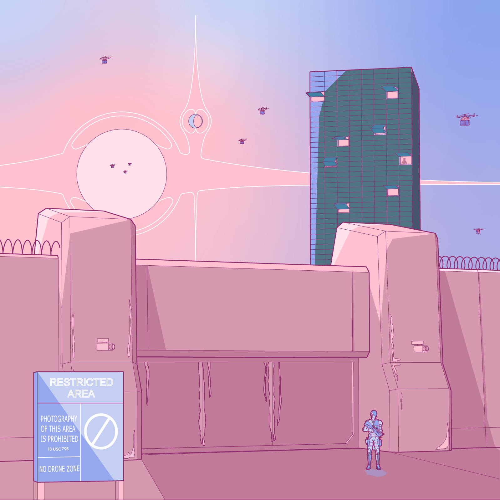

This is set of illustrations depicting a future of exaggerated inequity juxtaposing an architecture of extreme government control through centralized food distribution and an architecture of resistance via a speakeasy hidden in plain sight among ruined vineyards. The projects takes place in the form of the following narrative.
Traveling from Berkeley to Napa County, a man is whisked along a highway spanning over the ruins below, preventing escape from the prepared path. The highway, ripe with propaganda, is but a fragment of the infrastructure for a regime that used overwhelming state control of resources to negotiate the growing scarcity and inequity.
Looking to the west, a monolithic tower looms over the marshes and plains of the Napa River, clad in blackened steel. The tower has no name for no one may approach it. It’s existence to the quotidian passerby is behind a wall, imposing and armed. It’s structure is suspended above the ground. So, it resides in the realm of rumor and anecdote. An endless stream of autonomous trucks passes through its gate. Is it an isolated experiment? perhaps even extraterrestrial?

A closer look reveals a pulse - the facade fluttering open and closed, drones buzzing away and back, revealing a faint glow from within. The drones are the lifeline of the county, each carrying a week’s rations. The tower is a mechanical bastion, a space for machine rather than human. However, once in a blue moon, we hear of a man - never entering or leaving. We see a glimpse of his silhouette as the facade peels open then shuts again in a blink.
The mystery lasts for a minute as our traveler traces the tower in the distance, he doesn’t dwell as the real treasure lies to the east in the vineyards. Arriving at Napa, he produces a card reading Laputa, a floating castle of false grandeur from tales of old. Curiously, the card appears to be a menu - a relic of past times, when food wasn’t simply a ration delivered by drone. Turning around the menu he reads:
The riddle hints a the location of Laputa, a legendary speakeasy, a hidden bunker carved out of the rolling hills of the vineyard yet open to the skies above, thinly veiled by a protective canopy of grapevines. Its provisions are stolen from the very farms supplying the monolith to the west. It’s libations are jewels of defunct distilleries from Kentucky to Milano. Cloaked by the vineyard’s legions of uniform rows, without a heart for exploration or a special guide, the bar remains invisible, a descent into brief shelter from the tyranny above.

It takes an adventurous soul to even embark on the search and believe in such tales. Yet the traveler walks. Beneath the restrictive highway from which he came, he walks away from the city into the hinterland, the ruins of crumbled concrete and the untamed vines crawling over the artifacts of past civilization. Walking back towards the floating monolith, he searches for the ethereal bunker. Passing row after row to no avail, he begins to question whether such a place could really exist, yet finally freed from the city, for once, he reads endless possibility: the open alluvial plains on the West and endless rows of grape vines to the East.